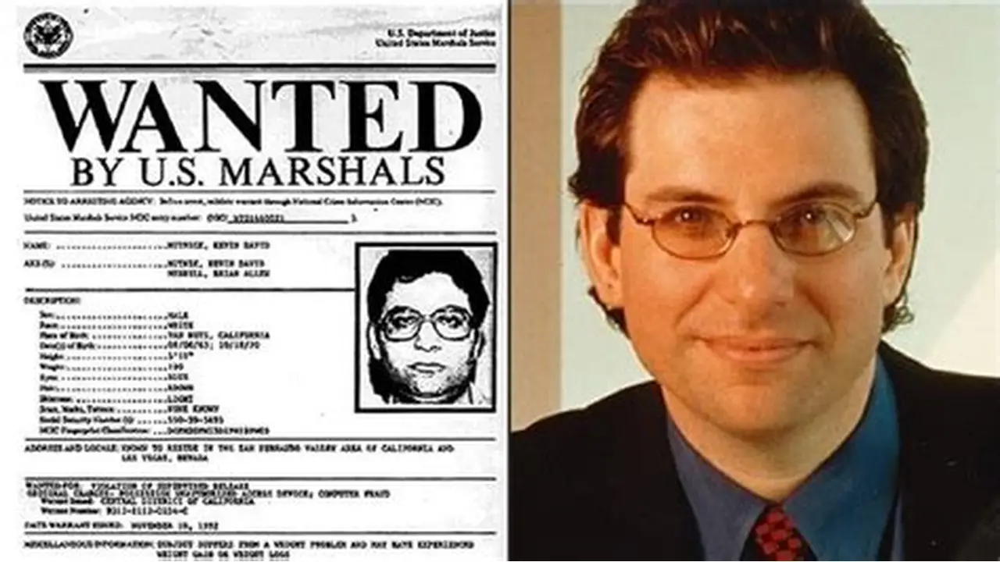
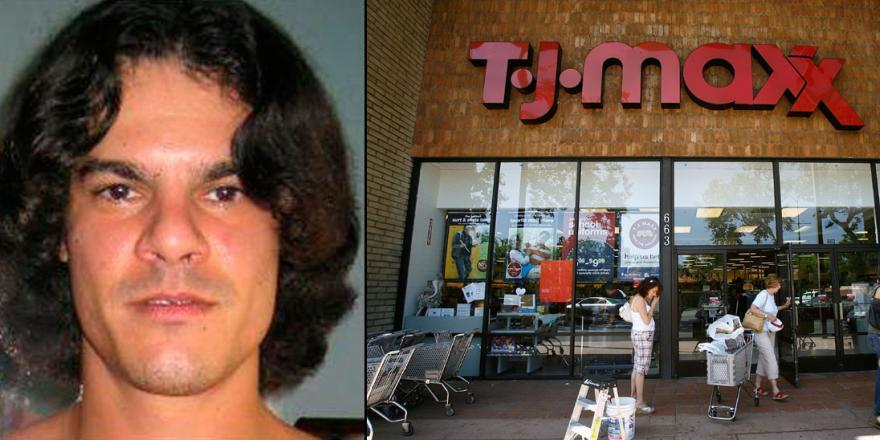
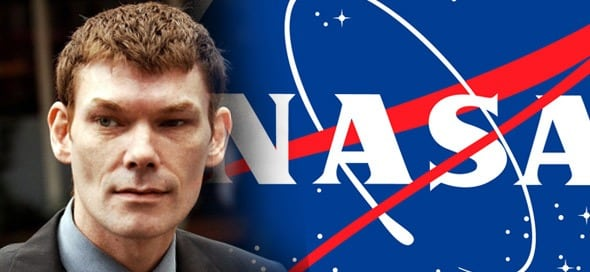
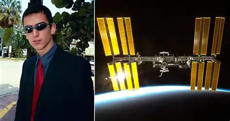

Пять известных хакеров
1. Кевин Митник. Кевин Митник, пожалуй, единственный хакер, чье имя было известно даже тем, кто далек от мира компьютеров. Он был одним из самых неуловимых киберпреступников в США. В 1980-е годы Митник незаконно проникал в компьютерные системы практически каждой крупной компании. Его невероятная история легла в основу остросюжетного фильма «Взлом». После взлома компьютерной сети американской компании Digital Equipment Corp., Митник отбыл год тюремного заключения, после чего был условно освобожден на три года. Однако, не дождавшись окончания срока, хакер скрылся и следующие два с половиной года совершал многочисленные громкие киберпреступления, в том числе кражу корпоративных секретов и атаки на системы оповещения национальной безопасности. В конечном счете, Митника поймали и приговорили к пяти годам лишения свободы. После освобождения он, судя по всему, оставил хакерство. Он стал известной личностью, консультантом в области кибербезопасности и автором нескольких книг. В настоящее время он возглавляет компанию Mitnick Security Consulting.

2. Альберт Гонсалес. Альберт Гонсалес, основавший хакерскую группу ShadowCrew, возглавлял ее преступную деятельность. Эта группа киберпреступников занималась хищением и сбытом номеров кредитных карт, а также изготовлением фальшивых документов, таких как страховые полисы, паспорта и свидетельства о рождении. В период с 2005 по 2007 год Гонсалес незаконно присвоил и продал свыше 170 миллионов номеров банковских счетов и кредитных карт. В 2010 году суд вынес хакеру приговор в виде 20 лет лишения свободы.

3. Гэри Маккиннон. Гэри Маккиннон, известный в интернете под ником Solo, — шотландский хакер, осуществивший самое масштабное проникновение в компьютерные сети военного ведомства за всю историю. В период с февраля 2001 года по март 2002 года, продолжавшийся 13 месяцев, Маккиннон несанкционированно проник более чем в 95 компьютеров, принадлежащих НАСА и американской армии. Сам хакер утверждал, что его единственной целью был поиск засекреченных данных об НЛО, однако представители власти США заявили, что он похитил большое количество важных файлов и причинил ущерб, оцениваемый более чем в 700 000 долларов. В связи с тем, что Маккиннон жил в Шотландии и осуществлял свою деятельность с территории Великобритании, американским властям было сложно привлечь его к ответственности. Тем не менее, в 2005 году США направили запрос на его выдачу. В то время премьер-министр Великобритании Тереза Мэй отклонила запрос Штатов, мотивируя это «тяжелым заболеванием» Маккиннона.

4. Джонатан Джеймс. Жизнь Джонатана Джеймса, известного под ником c0mrade, закончилась печально. Еще будучи юношей, Джеймс проявил выдающиеся хакерские способности, с легкостью проникая в защищенные правительственные и коммерческие сети. Он стал первым несовершеннолетним, осужденным за подобные преступления. В 1999 году Джеймс несанкционированно проник в компьютерную систему НАСА. Этот молодой хакер получил беспрепятственный доступ и похитил ряд файлов, в том числе и программный код, предназначенный для управления международной космической станцией.В 2008 году Джонатан Джеймс совершил суицид. Предполагается, что причиной послужили необоснованные обвинения в хакерских атаках, к которым он не имел отношения. Несмотря на распространенные слухи о том, что его смерть была подстроена, никаких убедительных подтверждений этому не существует.

5. Адриан Ламо. В 2001 году Адриан Ламо, тогда 20-летний, продемонстрировал свои хакерские навыки, взломав систему управления контентом на Yahoo. Он изменил статью Reuters, приписав бывшему Генеральному прокурору США Джону Эшкрофту несуществующую цитату. Ламо имел привычку публично раскрывать информацию о взломах, обращаясь к прессе и напрямую к жертвам, нередко предлагая помощь в устранении уязвимостей. Однако, как отмечает журнал Wired, в 2002 году его деятельность приобрела более серьезный оборот. Он проник в интранет New York Times, внес себя в список сторонних экспертов и начал проводить собственные расследования в отношении видных общественных деятелей. Его склонность к бродяжничеству с одним рюкзаком и отсутствие постоянного места жительства привели к появлению прозвища "Бездомный хакер".